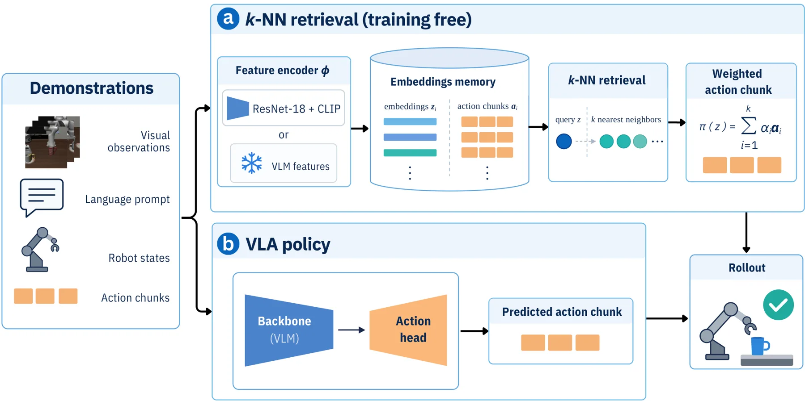
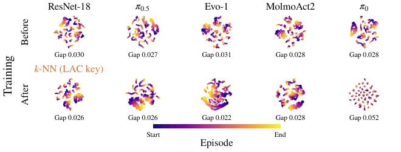
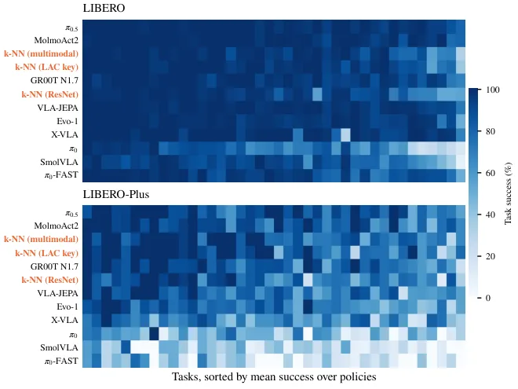
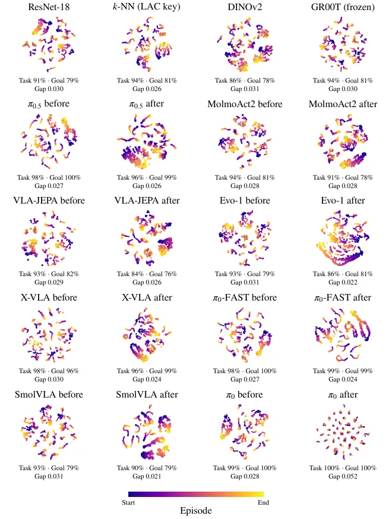
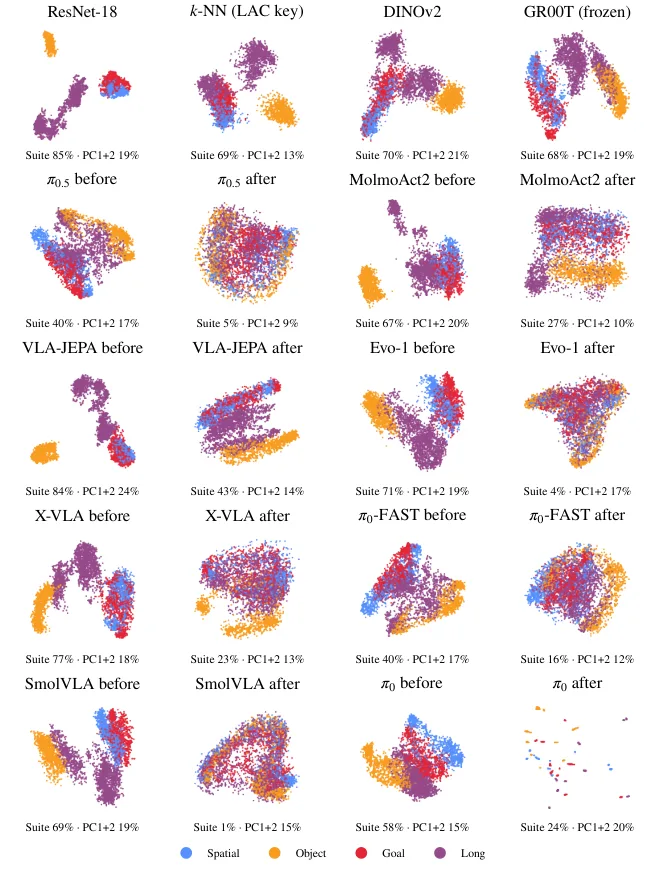

你的 VLA 有多少是 kNN：用检索基线量化 LIBERO 上的“记忆化”
How Much of Your VLA Is kNN
一句话：在 LIBERO 这种示范密集的基准上，一个不学策略的 kNN 就能拿到 91.7%，且抗扰动降幅最小；常用 VLA 的动作块也与训练示范高度接近（5/8 模型比留出真值更接近 kNN 预测）。
kNN success on LIBERO
smallest perturbation drop
LAC vs success (Pearson)
作者、单位与技术谱系 · Research context
作者与单位
研究脉络
- VINN（Pari 等，RSS 2022）方法上游关系：“在学到的视觉特征上做最近邻回归即可作为竞争性模仿策略”的直接前身[论文 §2]
- He 等《Demystifying Robot Diffusion Policies》方法上游关系：“扩散策略生成的动作块接近训练轨迹、可用查表替代”的结论是本文的直接动因[论文 §2]
- LIBERO-Plus / LIBERO-PRO评测基座关系：提供扰动用例与“记忆化 vs 泛化”的评测框架[论文 §2/§4]
- 本篇推进（LAC 指标）本篇推进关系：把“检索质量”变成一个无需 rollout 的离线标量，并可用于训练检索键[论文 §3.4/§6.5]
合作网络
- Sereact GmbHSereact GmbH → Denis Grachev、Damien LaRocque、Omar Moured关系：共同署名（同一公司）[arXiv 摘要页]
- 本文 ↔ LeRobot本文 → LeRobot（HuggingFace）关系：技术依赖（评测框架与 checkpoint 来源）[LeRobot 官方仓库]
- 本文 ↔ sereact/lerobot_knn本文 → sereact/lerobot_knn（论文声明的代码仓）关系：官方代码（截至抓取时不可访问）[论文摘要（声明地址）]
单位与作者角色来自论文首页；LeRobot 依赖来自正文与致谢。代码仓地址虽由论文给出，但当前 404，因此只记录为“声明地址”并列为待核验项，不推断任何未公开的合作关系。
方法本质拆解 · What actually changed
是不是微调？
主结果是零训练：ResNet-18 与 CLIP 都冻结，记忆直接来自示范。唯一的训练项是 LAC-key 变体里的一层线性投影，用 LAC 的可微代理训练，参数量极小，且论文明确说没有在基准上更新任何 VLA 权重。
有没有额外约束？
检索距离把五种模态按任务内中位距离归一化后再加权，避免数值尺度主导；近邻集合强制每条示范最多一个条目，防止单条轨迹垄断；输出是近邻动作块的 softmax 凸组合，因此动作一定落在示范张成的凸包内——这正是它无法外推的结构性原因。
推理/后端到底做了什么？
推理就是一次最近邻查询加一次加权求和，没有优化、没有重规划求解器。multimodal 变体额外做模式选择（压低非主模式近邻）与时间集成（每个控制步重查并融合重叠预测）；LAC-key 变体只是把特征先过一层线性投影再查。
方法本质是什么？
它把策略评估改写成“表征的局部一致性检验”：如果表征空间里相邻的观测对应相似未来动作，那么查表就够用；VLA 的增益因此可以被拆成“骨干提供的检索键质量”与“动作头额外贡献”两部分。它没有做的是任何超出示范支撑集的行为合成。
输入是冻结的图像/语言/状态嵌入与示范动作块；改变的位置是“策略”本身——用检索替代学习式动作头；约束动作是模态归一化、每示范一条近邻与凸组合；直接效果是用零训练拿到 91.7% 并暴露 VLA 的记忆化成分。

桥接价值Bridge
桥接价值
这篇给所有“学习式策略在基准上又涨了几个点”的结论加了一条硬对照：先看一个不训练的近邻检索能做到多少。只要检索基线接近被评模型，增益就更可能是记忆化而不是泛化。对我们也一样——评估任何学习式状态估计/配准模块时，先构造一个“只查表”的弱基线，能立刻区分“学到了几何”与“背下了场景”。
方法与模块Method
方法摘要
离线阶段把 1693 条 LIBERO 示范每隔一帧存一条 (观测, 未来 H 步动作块, 轨迹 id)，共约 13.7 万条；推理时把当前观测映射到同一空间，用视觉特征、机器人状态、语言嵌入、回合时间与历史观测的加权距离检索，每个模态先按任务内中位距离归一化。近邻限制为每条示范最多取一个，用 softmax 加权后把对应动作块相加作为输出；multimodal 变体取 k=13 并叠加模式选择与时间集成。
可迁移模块
第一是可复用的离线指标 LAC@8：它等于 1 减去“近邻平均动作距离 / 同任务平均动作距离”，不需要跑闭环就能判断一个表征是否把“看起来像”与“接下来该怎么做”对齐。第二是“检索键训练”：把 ResNet 特征过一个线性投影，用 LAC 的可微代理训练，就能把同一份记忆的检索成功率从 88.7% 提到 93.0%。第三是每条示范只取一个近邻的约束，fANOVA 显示它贡献了 25% 的重要性。

证据Evidence
关键证据与数字
LIBERO / LIBERO-Plus 成功率：multimodal kNN 91.7 / 82.4（Δ−9.3pt，全部策略中最小）；ResNet kNN 88.7 / 75.5；LAC-key kNN 93.0 / 81.7；π0.5 97.7 / 85.5（Δ−12.2）；π0-FAST 90.6 / 25.7（Δ−64.8）；SmolVLA 82.2 / 27.9。消融：只用 10% 示范降到 77.4%，用原始像素替代嵌入降到 57.2%，去掉语言提示掉 27.1pt，k=1 降到 78.6%。表征侧：微调后骨干检索在 7/8 个模型的 LIBERO-Plus 上提升 5–37pt，但 π0 的骨干检索从 86.9% 崩到 17.9%；LAC 与闭环成功率的 Pearson r=0.78、Spearman ρ=0.61。
边界与下一步Limits & Next Step
边界与风险
作者明确限定结论在 LIBERO 及同类基准：示范密集本身有利于检索，LIBERO-Plus 的扰动仍保留原任务解法，所以“鲁棒”只覆盖观测与指令变化，不覆盖需要新轨迹的情形；检索无法外推到记忆支撑集之外。另外所有 VLA 都用公开 checkpoint 复评，可能与论文自报数字不一致。我们的风险项：论文给出的代码地址 https://github.com/sereact/lerobot_knn 目前返回 404，复现需等仓库公开；kNN 的超参在初始状态 40–49 上调过，虽然作者报告 0–39 上为 91.6%，但仍属同分布调参。
下一步实验
一，在我们自己的任务/数据上先跑一个“检索上界”，作为任何学习模块的可解释对照；二，把 LAC 当作表征选择指标，在多个骨干（DINOv2、VGGT 特征、我们自己的描述子）上比较“表征好”与“后端好用”是否一致；三，构造示范稀疏（10%/1%）版本，测 LAC 与成功率的相关性是否仍成立，这决定它能否用于我们小样本的 SLAM 重定位评估。





